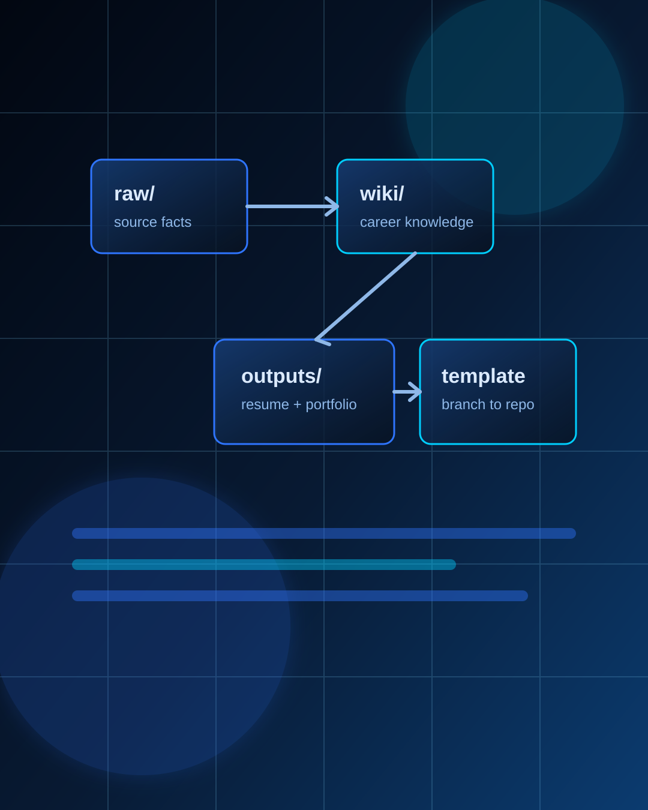

Career OS Template
이력서가 매번 새로 시작된다면
지원 과정을 OS처럼 만들자
자료 저장부터 JD 맞춤 패키지까지 한 흐름으로.

자료 저장부터 JD 맞춤 패키지까지 한 흐름으로.
Career OS는 원천 자료와 제출 문서를 분리해, 같은 사실을 여러 산출물에 안정적으로 재사용하게 만든다.
핵심은 제출 문서를 바로 고치는 게 아니라, 먼저 wiki를 갱신하고 산출물을 다시 만드는 것이다.
`career-apply-pipeline`은 하위 스킬들을 순서대로 묶는 상위 런북이다.